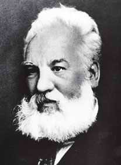

44 ALEXANDER GRAHAM BELL 1847-1922
Tak
seberapa dapat pendidikan formal, tetapi diajar baik oleh
keluarganya dan belajar sendiri, begitulah ihwal Alexander
Graham Bell penemu tilpun yang dilahirkan tahun 1847 di
Edinburg, Skotlandia. Minat Bell memproduksi kembali suara
vokal timbul secara wajar karena ayahnya seorang ahli dalam
hal fisiologi vokal, memperbaiki pidato dan mengajar
orang-orang tuli.
Bell pernah ke Boston, negara bagian Massachusetts tahun
1871. Di sanalah pada tahun 1875 dia membuat
percobaan-percobaan yang mengarah pada penemuan tilpun. Dia
mengumpulkan paten untuk mengokohkan penemuannya di bulan
Februari 1876 dan mendapat imbalan beberapa minggu kemudian.
(Menarik sekali untuk dicatat bahwa seorang lain bernama
Elisha Gray juga mengumpulkan paten penemuan untuk
pengokohan mengenai peralatan serupa pada hari yang
berbarengan dengan apa yang diperbuat Bell, hanya selisih
beberapa jam saja).
Tak lama sesudah patennya diterima, Bell mempertontonkan
tilpun di pameran 100 tahun kota Philadelphia. Penemuannya
menarik perhatian besar publik dan mendapat penghargaan atas
hasil karyanya. Tetapi, The Western Union Telegraph Company
yang menawarkan uang sebesar $100.000 buat penemuan alat itu
mengelak membayarnya. Karena itu, Bell dan kawan-kawannya,
di bulan Juli 1877, mendirikan perusahaan sendiri, nenek
moyang dari American Telephone and Telegraph Company
sekarang. Tilpun dengan cepat dan besar-besaran mencapai
sukses secara komersial. Sakarang ini AT & T merupakan
perusahaan bisnis yang terbesar di dunia.
Bell dan istrinya yang di bulan Maret 1879 memegang 15
persen saham dari perusahaan itu tampaknya tak punya
bayangan betapa akan fantastisnya keuntungan yang bakal
diterima oleh perusahaan itu. Dalam tempo cuma tujuh bulan,
mereka sudah jual sebagian besar saham mereka dengan harga
rata-rata $250 per saham. Di bulan Nopember harganya sudah
melesat naik jadi $1000 per saham! (Di bulan Maret itu
isterinya-lah yang mendesak buru-buru jual karena dia
khawatir harga saham tak akan sampai setinggi itu lagi!) Di
tahun 1881 dengan gegabah mereka jual lagi sepertiga jumlah
sisa saham yang mereka punyai. Meski begitu, toh dalam tahun
1883 mereka sudah bisa peroleh keuntungan seharga sekitar
sejuta dolar.
Kendati penemuan tilpun sudah mengorbitkan Bell jadi
kaya-raya, dia tak pernah berhenti meneruskan
penyelidikannya, dan dia berhasil menemukan lagi pelbagai
alat yang berguna walau tidak sepenting tilpun. Minatnya
beraneka ragam, tetapi tujuan utamanya adalah menolong orang
tuli. Istrinya sendiri tadinya gadis tuli yang dilatihnya
sendiri. Empat anak, dua lelaki dua perempuan keluar berkat
perkawinan tetapi keempatnya mati muda. Tahun 1882 Bell jadi
warganegara Amerika Serikat dan mati tahun 1922.
Ukuran besar-kecilnya pengaruh Bell terletak pada
penilaian besar kecilnya makna tilpun itu sendiri. Menurut
hemat saya, pengaruh itu besar sekali karena tak banyak
penemuan yang begitu luas digunakan orang dan begitu besar
pengaruhnya dalam kehidupan sehari-hari.
Saya tempatkan Bell dalam urutan di bawah Marconi
berhubung radio lebih beragam kegunaannya ketimbang tilpun.
Misalnya, pembicaraan lewat tilpun dapat pada dasarnya
dilakukan lewat radio, tetapi dalam beberapa hal (misalnya
komunikasi dengan pesawat yang sedang terbang) tilpun tidak
bisa menggantikan fungsi radio. Kalau saja cuma faktor itu
semata yang jadi ukuran, Bell akan menduduki urutan jauh
lebih bawah lagi daripada Marconi. Tetapi, ada dua hal yang
layak dipertimbangkan. Pertama, meskipun pembicaraan tilpun
pribadi bisa saja dilakukan lewat radio, akan teramat
sulitlah menggantikan seluruh sistem pertilpunan kita dengan
jaringan radio yang setara. Kedua, metode pokok menyalurkan
kembali suara yang dirancang Bell buat penerima tilpun
belakangan di ambil oper dan digunakan oleh penerima radio,
piringan hitam dan pelbagai rupa peralatan lainnya. Itu
sebabnya saya anggap pengaruh Bell cuma sedikit lebih kurang
ketimbang Marconi.
Situs Web
- http://www.alexandergrahambell.org/
- http://memory.loc.gov/ammem/bellhtml/bellhome.html
|